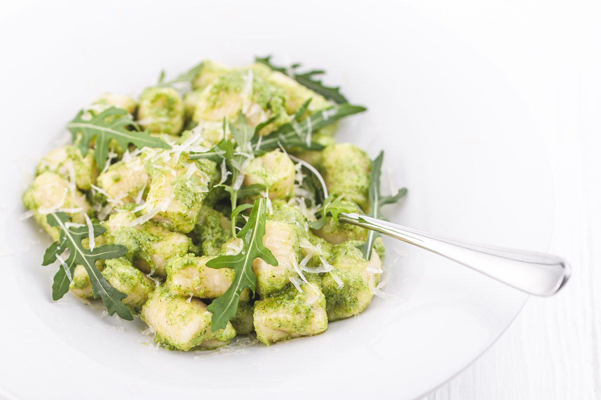

Gnocchi mit Pesto

Gnocchi mit Pesto
Ein leckeres und einfaches Gericht zum selber nachmachen
Zutaten
- Rucola
- Gnocchi
- Pinienkerne
- Parmesan
- Knoblauch
- Salz
- Basilikum
Anleitung
- Schritt: Die Gnocchi im gesalzenen Wasser kochen
- Schritt: Den Rucola waschen und trocknen lassenn
- Schritt: 2 Knoblauchzehen schneiden und mit Pinienkeren zusammen in einem Mixer häxeln
- Schritt: Basilikum hinzugeben
- Schritt: Parmesan reiben
- Schritt: Parmesan und Olivenöl hinzugeben und mixen
- Schritt: Rucola in eine Schüssel geben, Pesto, Pinienkerne, Parmesan hinzugeben und vermengen
- Schritt: Gnocchi hinzugeben ein letztes Mal vermengen
- Schritt: Essen und genießen